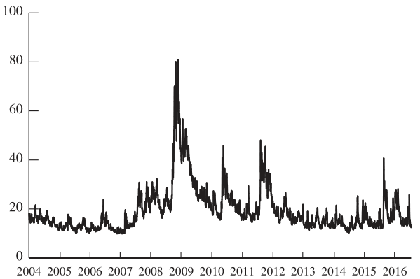

Black-Scholes-Merton Model
Contents
Black-Scholes-Merton Model#
Introduction to Black-Scholes-Merton Model#
Model Assumptions
The options are European-style (early exercise is not allowed).
There are no dividends during the life of the derivative.
There are no riskless arbitrage opportunities.
Short selling of the underlying instrument is permitted.
There are no market frictions: no transaction costs, regulatory constraints, or taxes.
The risk-free rate of interest is constant and the same for all maturities.
The volatility of the return on the underlying is known and constant.
The underlying follows a geometric Brownian motion statistical process (continuous prices with no jumps).
Continuous trading is available (one must be able to trade at every instant) and the underlying instrument has perfect liquidity.
The Black-Scholes-Merton Formulas for Options
\(N(x)\)…the standard normal cumulative distribution function; \(r\)…annualized continuously compounded risk-free rate; \(\sigma\)… annualized constant volatility; \(S\)…stock price; \(K\)…strike price; \(T\)…time to expiration for the option (in years)
where $\(d_1 = \frac{\ln (S_0 / K) + (r + \sigma^2 / 2)T}{\sigma \sqrt{T}}\)\( \)\(d_2 = \frac{\ln (S_0 / K) + (r - \sigma^2 / 2)T}{\sigma \sqrt{T}} = d_1 - \sigma \sqrt{T}\)$
The N(x) Function
\(N(x)\) is the probability that a normally distributed variable with a mean of zero and a standard deviation of 1 is less than \(x\)
See tables at the end of the book or function NORMDIST in excel

Understanding Black-Scholes I
\(N(d_2)\)…Probability of exercise (at maturity)
\(S_0 e^{rT} N(d_1)\)…The expected stock price at maturity in a risk-neutral world when stock prices less than the strike price are counted as zero.
The expected payoff is therefore $\(S_0 e^{rT} N(d_1) - K N(d_2)\)$
Calculate present value to get $\(c = S_0 N(d_1) - K e^{-rT} N(d_2)\)$
Understanding Black-Scholes II $\(c = e^{-rT} N(d_2) \left( S_0 e^{rT} N(d_1) / N(d_2) - K \right)\)$
\(e^{-rT}\)…Present value factor
\(N(d_2)\)…Probability of exercise (at maturity)
\(S_0 e^{rT} N(d_1) / N(d_2)\)…Expected stock price in a risk-neutral world if option is exercised
\(K\)…Strike price paid if option is exercised
Risk-Neutral Valuation
The variable \(\mu\) does not appear in the Black-Scholes-Merton differential equation.
The equation is independent of all variables affected by risk preference.
The solution to the differential equation is therefore the same in a risk-free world as it is in the real world.
This leads to the principle of risk-neutral valuation.
Applying Risk-Neutral Valuation:
Assume that the expected return from the stock price is the risk-free rate
Calculate the expected payoff from the option
Discount at the risk-free rate
Properties of Black-Scholes Formula
As \(S_0\) becomes very large \(c\) tends to \(S_0 - Ke^{-rT}\) because \(d_1\) and \(d_2\) become very large, and \(N(d_1)\) and \(N(d_2)\) become close to 1.
On the other hand, \(p\) tends to zero because \(N(-d_1)\) and \(N(- d_2)\) become close to 0.
As \(S_0\) becomes very small \(c\) tends to zero and \(p\) tends to \(Ke^{-rT} - S_0\)
Black-Scholes-Merton Model Example
\(S_0 = 42\), \(K = 40\), \(r = 0.1\), \(\sigma = 0.2\), \(T = 0.5\)
where $\(d_1 = \frac{\ln (S_0 / K) + (r + \sigma^2 / 2)T}{\sigma \sqrt{T}}\)\( \)\(d_2 = d_1 - \sigma \sqrt{T}\)$
Black-Scholes-Merton Model Example
\(S_0 = 42\), \(K = 40\), \(r = 0.1\), \(\sigma = 0.2\), \(T = 0.5\)
\(d_1 = \frac{\ln (42/40) + (0.1 + 0.2^2 / 2) \times0.5 }{0.2 \sqrt{0.5}} = 0.7693\)
\(d_2 = 0.7693 - 0.2 \sqrt{0.5} = 0.6278\)
Using NORMDIST in Excel:
N(0.7693) = 0.7791; N(0.6278) = 0.7349;
N(-0.7693) = 0.2209; N(-0.6278) = 0.2651
\(K e^{-rT} = 40 e^{-0.1 \times 0.5} = 38.049\)
Volatility#
Historical Volatility
The volatility is the standard deviation of the continuously compounded rate of return in 1 year
The standard deviation of the return in a short time period \(\Delta t\) is approx. \(\sigma \sqrt{\Delta t}\)
If a stock price is USD 30 and its volatility is 25% per year what is the standard deviation of the price change in one day?
On the other hand, when you calculate volatility as a standard deviation of daily returns, you can multiply the result by \(\sqrt{252}\) to obtain annulized volatility.
Nature of Volatility (Business Snapshot 15.2)
Volatility is usually much greater when the market is open (i.e. the asset is trading) than when it is closed.
For this reason time is usually measured in [trading days]{.alert} not calendar days when options are valued.
It is assumed that there are 252 trading days in one year for most assets
Suppose it is April 1 and an option lasts to April 30 so that the number of days remaining is 30 calendar days or 22 trading days
The time to maturity would be assumed to be 22/252 = 0.0873 years
Implied Volatility
Option’s value is particularly sensitive to volatility.
Unlike the price of the underlying, volatility is not an observable value in the marketplace.
Volatility can be, and often is, estimated based on a sample of historical data.
Volatility can also be inferred from option prices. This inferred volatility is called the implied volatility.
The implied volatility of an option is the volatility for which the Black-Scholes-Merton price equals the market price
The key advantage in using implied volatility is that it provides information regarding the market’s perception of uncertainty going forward.
The VIX S&P500 Volatility Index

Chapter 26 explains how the index is calculated
Implied Volatility in Option Trading
Implied volatility can be interpreted as the market’s view of option value.
In the option markets, participants use volatility as the medium in which to quote options. Rather than quote a call price as $10, traders may quote the implied volatility as 25%, which prices the option at $10.
Implied volatility can be used to assess the relative value of different options, neutralizing the effects of moneyness and time to expiration (low implied volatility = cheap options)
Implied volatility is useful for revaluing existing positions over time.
Regulators, banks, compliance officers, and most option traders use implied volatilities to communicate information related to options portfolios.
Implied Volatility Summary
Although historical volatility can be estimated, there is no objective measure of future volatility.
Implied volatility is the BSM model volatility that yields the market option price.
Implied volatility is a measure of future volatility, whereas historical volatility is a measure of past volatility.
Option prices reflect the beliefs of option market participants about the future volatility of the underlying.
The volatility smile is a two dimensional plot of the implied volatility with respect to the exercise price.
The volatility surface is a three-dimensional plot of the implied volatility with respect to both expiration time and exercise prices.
If the BSM model assumptions were true, then one would expect to find the volatility surface flat, but in practice, the volatility surface is not flat.
Dividends#
European options on dividend-paying stocks are valued by substituting the stock price less the present value of dividends into Black-Scholes.
Only dividends with ex-dividend dates during life of option should be included.
The “dividend” should be the expected reduction in the stock price expected during the life of the option.
American Calls
An American call on a non-dividend-paying stock should never be exercised early
An American call on a dividend-paying stock should only ever be exercised immediately prior to an ex-dividend date
Suppose dividend dates are at times \(t_1, t_2, \dots t_n\).
Early exercise is sometimes optimal at time \(t_i\) if the dividend at that time is greater than \(K[1 - e^{-r (t_{i+1} - t_i)}]\)
Black’s Approximation for Dealing with Dividends in American Call Options Set the American price equal to the maximum of two European prices:
The 1st European price is for an option maturing at the same time as the American option
The 2nd European price is for an option maturing just before the final ex-dividend date